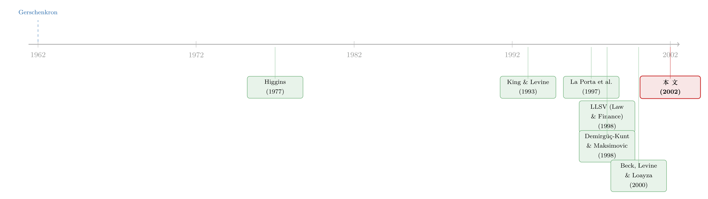

英国人发债、德国人找银行，真的重要吗？
本文读的是 Demirgüç-Kunt & Maksimovic (2002, Journal of Financial Economics)：作者用 40 个国家的企业财务数据，去检验一个争论了半个世纪的老问题——一国是「银行主导」还是「市场主导」，到底会不会改变企业获得外部融资、为增长融资的能力？结论有点扫兴却很有力：真正决定企业能不能拿到钱的，是这个国家的法律体系；至于银行相对股市谁更发达这种「金融结构」之争，对企业融资几乎没有可观测的影响。
1 一个争了半个世纪的问题
先讲一个由来已久的争论。
经济史学家 Gerschenkron（1962）很早就注意到，英国和欧洲大陆的经济发展走了两条不同的路，而这两条路恰好对应着两种不同的金融体系：一种以资本市场为中心，企业直接到股市、债市去融资；另一种以银行为中心，企业的钱主要从银行和金融中介那里来。后来日本经济的崛起、美国经济的相对表现，又一次次把这个对比推到台前——观察者们几乎是本能地相信：银行主导 (bank-based) 和市场主导 (market-based) 这两种体系，会孵化出不同的增长模式。
于是一个非常自然的政策问题就冒出来了：如果两种体系真有优劣之分，那么一个国家是不是应该主动去选那个「更优」的体系？是该大力发展银行，还是该大力发展股市？
这个问题听上去理所当然，但 La Porta、Lopez-de-Silanes、Shleifer、Vishny（合称 LLSV）在 1997、1998 年的两篇论文里，给它泼了一盆冷水。他们提出了一个截然不同的视角：决定一国金融体系是否有效的，不是「银行 vs. 市场」这个表层结构，而是更底层的法律体系——法律能不能保护外部投资者的权利。按这个逻辑，「银行主导还是市场主导」这个区分，对政策制定来说根本不是重点。
两种说法摆在面前，谁对谁错，不能靠讲故事来定。得用数据说话。而 Demirgüç-Kunt 和 Maksimovic 这篇文章，干的就是这件事。
2 一个绕不开的坑：选择偏差
接着，一个自然的问题是：怎么用数据去检验「金融体系影响企业增长」？
最直接的想法是:拿企业（或行业、或国家）的增长率，去回归这个国家的金融/法律特征,看哪种体系下企业长得更快。国家层面这样做没什么问题，但一旦下沉到行业、企业层面，就埋着一个很深的坑——选择偏差 (selection bias)。
为什么？因为一个国家里生产是怎么组织的，本身就是被它的金融与法律体系塑造出来的。你观察到的那些企业，早已经「适应」了本国的金融体系。直接比较它们的增长率，等于默认了「企业的构成」是给定的——可事实恰恰相反。
作者举了一个很妙的例子。设想两个国家 B 和 M：B 是银行主导，M 是市场主导，并假设市场主导体系在提供长期融资上更有优势。两国的创业者在同一个行业开公司，但 M 国的创业者因为能拿到长期资金，可选的技术和组织形式更多，所以 M 国整体上更富。可问题在于——一旦初始投资完成，每家公司、乃至整个行业，在 B 国和 M 国可以用完全一样的速度增长。甚至 B 国的企业可能长得更快，因为它们攒够了钱就能换上更先进的技术、自我融资。
这就是关键的陷阱：如果只比增长率，你会发现 B、M 两国的企业长得一样快，从而错误地得出「市场主导体系没有任何好处」的结论。可真正的差别，藏在那些根本没能成立、或者一出生就被锁死在低端技术上的企业里——它们不在你的样本里。
3 真正关键的一步：不比增速，比「谁突破了自筹上限」
那真正关键的一步在哪里？
Demirgüç-Kunt 和 Maksimovic（1998）此前发展出的办法是：不要去比增长率本身，而要去比「有多大比例的企业，增长速度超过了它自己能筹到的钱所支撑的速度」。换句话说，去数一数，在每个国家里，有多少企业长得比「只靠内部资金」或「只靠短期负债」所能支撑的速度还要快——这些企业必然动用了外部长期融资。这个比例，才是不同金融/法律体系优劣的真正信号。回到上面 B、M 两国的例子，这套方法会正确地把 M 国的体系识别为更优。
那么，怎么算出一家企业「靠自己能长多快」？作者借用了一个非常古典的工具：财务管理里的「销售百分比」财务规划模型 (percentage-of-sales financial planning model)，最早由 Higgins（1977）提出。这个模型把企业的增长率和它对外部资金的需求联系起来。
一家以每年 \(g\) 的速度增长的企业，在 \(t\) 时刻的外部融资需求 (external financing need, EFN) 为：
直觉很朴素：右边第一项是「为了长这么快，你得投多少」；第二项是「靠留存利润，你自己手里有多少」。两者之差，就是你必须从外面借来或募来的钱。这个模型背后有几个隐含假设——资产/销售之比恒定、单位销售的利润率恒定、会计折旧等于经济折旧——作者在前作里都检验过，结果对这些假设并不敏感。
有了 EFN，就能定义两条「自筹增长上限」。
第一条，内部融资增长率 (internally financed growth rate, IG)：假设企业把利润全部留存（\(b_t = 1\)）、不动用任何外部资金，即令 \(EFN_t = 0\)，解出 \(g_t\)：
$$IG_t = \frac{ROA_t}{1 - ROA_t}$$
这里 \(ROA_t\) 是企业的资产回报率。直觉一目了然：越赚钱的企业，越能靠自己支撑更高的增长。
第二条，短期融资增长率 (short-term financed growth rate, SFG)：在 IG 的基础上，再允许企业动用短期负债。作者把没有被短期负债覆盖的那部分资产称为「长期资本」，用它的回报率 \(ROLTC_t\) 替换上式中的 \(ROA\)：
$$SFG_t = \frac{ROLTC_t}{1 - ROLTC_t}$$
于是，每家企业、每一年，都能算出它的 IG 和 SFG。然后作者去比对企业实际的、经通胀调整后的真实销售增长率：
- 如果实际增速超过了 IG，这家企业必然用了内部资金之外的钱；
- 如果实际增速还超过了 SFG，那它必然拿到了长期外部融资（债或股）。
把这些 0/1 的哑变量在国家层面加总，就得到三个核心变量：STCOUNT（增速超过 IG 的企业比例，即用了任何外部融资的比例）、LTCOUNT（增速超过 SFG 的比例，即拿到长期融资的比例）、以及 DCOUNT（介于两者之间、只能拿到短期融资的比例）。
这套设计的精妙之处在于：它把一个不可观测的概念——「企业有没有受到融资约束」——翻译成了一个可观测、可跨国比较的比例。而且这个估计是偏保守的：它假设企业对无约束的融资渠道（如商业信用）的使用强度不会超过当前水平，因此倾向于低估企业能自筹的增速，反而让「突破上限」这个信号更可信。
4 数据与结果：法律说了算，结构不重要
然后，把这套方法铺到数据上。
样本是 40 个国家最大的上市制造业企业（SIC 2000–3999），来自 Worldscope，共 45,598 个企业-年观测，覆盖 1989–1996 年，既有发达国家也有发展中国家。金融体系发展的数据来自 Beck、Demirgüç-Kunt、Levine（1999）编的数据库。这个样本里的国家，人均 GDP 跨度极大——从瑞士的 $26,972 一路到巴基斯坦的 $319；法律体系的有效性也千差万别，既有高效的普通法国家（美国、加拿大），也有低效的（印度、巴基斯坦），既有高效的大陆法国家（瑞士），也有低效的（哥伦比亚、秘鲁）。
衡量法律环境，作者刻意没有去逐条比较各国法律条文，而是更看重一个综合指标——由国际国家风险评级机构 (International Country Risk-Rating Agency) 编制的「law and order」指数，0 到 6 分，分数越高代表司法系统越能切实裁决纠纷。理由很现实：具体的法律保护，企业可以通过改写合同条款来绕过、来补偿；但司法系统系统性地无法裁决索赔这种失灵，是很难补偿的。当然，为完整起见，作者也放进了 LLSV（1998）的那套指标：普通法哑变量、债权人权利指数（0–4）、股东权利指数（0–5）。
接下来是这篇文章的核心发现，我把它拆成三层。
第一层：外部融资，确实和金融发展正相关。 企业使用外部融资的程度，和一国「预测的」银行体系发展、以及证券市场发展，都呈正相关。注意这个「预测的」——作者先用法律环境去预测一国「应有」的银行/股市发展水平，再用这个预测值进入回归。一个直观的对照是：在美国样本里，大约有一半企业的增长率超过了 IG。
第二层，也是真正的反转：金融结构本身，不重要。 这是全文最关键、也最反直觉的结果。作者发现，那部分与法律体系无关的金融发展变异，对企业获得外部融资没有可观测的影响。说得更具体：把国家按「银行相对于股市谁更发达」分成银行主导和市场主导（用 Demirgüç-Kunt & Levine 1999 的 MARKET1 哑变量、Structure 综合指数等若干代理变量），这种分类预测不了企业是否用外部融资、以及用多少。一国是「英国式」还是「德国式」，对企业能不能为增长拿到钱，几乎没有独立的解释力。
这正好印证了 LLSV（1998）的立场：起决定作用的是法律体系，而非银行/市场的相对结构。由此引出的政策含义干净利落——想改善企业的外部融资环境，正道是去完善一国的法律体系，然后让企业和投资者自己去选择：是直接在市场上签约（市场主导），还是通过银行中介（银行主导）。两条路都行。
第三层：但银行和股市，在「融资类型」上确有分工。 反转之后还有余味。作者发现，证券市场和银行发展，对企业获得的融资类型有不同的影响，尤其是在金融发展水平较低的国家。在那些法律契约环境预测股市会高度发达的国家里，有更多企业以需要长期外部融资的速度增长；而对「预测的银行发展」却没有同样的效果。这呼应了作者在第 2 节提出的假设 H3——银行和证券市场在提供不同期限的服务上各有比较优势：银行更擅长短期融资，市场更擅长长期融资。
所以全文的「一个核心」可以这样总结：法律决定了金融服务的「数量」，而银行与市场的比较优势决定了金融服务的「期限结构」；但「谁主导」这个结构标签本身，并不独立地决定企业能否融资。
5 文献脉络
把这篇文章放回它所在的那条线里看，逻辑会更清楚。
最早，是 Gerschenkron（1962）这样的经济史学家，从英国与欧洲大陆的对比里，提出了「银行主导 vs. 市场主导」这个框架性问题。接着，金融发展与增长的关系被一批宏观研究做实——King 和 Levine（1993a, b）用跨国数据指出金融发展对宏观增长至关重要；随后 Levine 和 Zervos（1998）、Rajan 和 Zingales（1998）、以及 Demirgüç-Kunt 和 Maksimovic（1998）分别在国家、行业、企业三个层面，把「金融发展—增长」这件事拆开来看；Beck、Levine、Loayza（2000）和 Wurgler（2000）则进一步从增长来源和资本配置效率的角度补强了证据。

但真正改变这条研究走向的，是 LLSV（1998）那篇《Law and Finance》。它把「法律体系」第一次正式推到了公司金融的中心，主张投资者权利的法律保护才是金融体系有效性的根。本文正是站在这个十字路口上：它继承并扩展了 Demirgüç-Kunt 和 Maksimovic（1998）的企业层面方法，把矛头直接指向「银行 vs. 市场」与「法律」之争——用企业能否为增长融资这个干净的因变量，去裁决这场争论，最终站到了 LLSV 这一边。
如果你对这条「法与金融」的脉络感兴趣，本博客里有几篇可以对读：关于法律起源如何塑造金融的，可参见《法律是行李，风土是地基》；关于英美式与德式金融体系为何会分道扬镳、又为何能持续的，可参见《为什么英国人发债，德国人却找银行？》；关于金融结构与产业增长的乘数关系，可参见《金融结构与增长之谜》；而关于投资者保护如何「长出」一国股市的，可参见《把法律写成一个「被抓的概率」》。
6 评论与延伸（Q&A + 研究方向）
(a) 几个可能的疑问
Q：所谓「自筹增长上限」，凭什么说超过它就一定动用了外部融资？
因为 IG 和 SFG 是按照「企业把全部利润留存、且对商业信用/短期负债的使用不超过当前水平」算出来的保守上限。一家企业的真实增速若长期超过这条线，会计恒等式上就必须有外部长期资金进来。保守的好处是它倾向于低估自筹能力，从而让「突破上限」这个判定不容易出现假阳性。当然，代价是它对会计质量很敏感（见下一问）。
Q：这套方法和基于 Tobin's q 的投资—现金流方法有什么不同？
两者都试图从当期财务数据推断企业的未来投资机会，因此共享同一个隐患：它们都隐含假设企业的当期利润与未来投资机会正相关。对那些「现金多、机会差」的成熟企业（高利润但没好项目），这套方法会把它们归为「不需要外部融资」，可这并不意味着它们融不到资。作者也承认这一点，并在回归里用一国 GDP 增速来控制跨国增长机会的差异，以缓解这种偏差。
Q：只用最大的上市制造业企业，结论能推广到整个经济吗？
这是最该警惕的地方。作者很坦诚：可获得数据的，是每个经济体里数量很少的、最大的上市公司，Beck 等（2001）已指出它们面临的金融与法律约束并不能代表经济中的全部企业。但行业层面的数据又有相反的偏差——里面塞了太多在任何体系下都拿不到融资的微型企业。所以作者的立场是：企业层面和行业层面的发现需要合起来看，单独任何一个都不完整。
Q：「金融结构不重要」这个零结果，会不会只是统计功效不足？
有这个可能，零结果永远比正结果更难解读。但作者用了多个代理变量（
MARKET1、Structure 指数、Turnover、Bank/GDP 分开）反复检验，结果一致地指向「无关」；而同一套回归里，法律/金融发展水平的系数却是显著为正的。也就是说，方法本身是有功效的——能识别出「水平」的作用，却识别不出「结构」的作用。这让零结果更可信，而非更可疑。
Q：用「预测的」银行/股市发展，而不是实际值，会不会是在循环论证？
不算循环，反而是要点所在。作者先用法律环境去预测一国「应有」的金融发展，目的正是为了把「金融发展中由法律决定的那部分」和「与法律无关的那部分」分开。结论之所以有分量，是因为：与法律相关的那部分金融发展能预测融资，而与法律无关的那部分结构差异不能。如果直接用实际值，就分不开这两块了。
Q：第三层结果（股市更利于长期融资）会不会削弱第二层（结构不重要）？
这是全文最微妙的张力。两者其实不矛盾：第二层说的是「银行/市场谁主导」这个相对结构标签不影响企业能否融资；第三层说的是法律环境若偏向支持股市，会改变企业拿到的融资期限。换句话说，结构不影响「总量」，但影响「构成」——尤其在低金融发展水平的国家，契约环境的差异会决定哪些项目能拿到长期钱。
(b) 几个可能的研究问题与提案
1. 把这套「自筹上限」方法搬到公司债市场的期限结构上。
【经济故事】本文发现股市更利于长期融资、银行更利于短期融资。一个自然的延伸是：在债务内部，一国的法律/破产制度是否决定了企业能发长债还是只能滚动短债？这正是融资约束最咬人的地方。 【可行性】中。所需数据是跨国企业债发行明细（如 Mergent FISD 跨国版、Capital IQ）加上各国破产法效率指标。识别上可借鉴本文「预测发展水平」的思路，但债务期限的内生性更强，需要更干净的法律变动作为外生冲击。
2. 用一次具体的法律改革做事件研究，检验本文的因果含义。
【经济故事】本文是跨国横截面，最大的软肋是因果。如果某国在样本期内发生了一次显著的债权人/股东保护立法改革，就能看「改革后，突破自筹上限的企业比例」是否跳升。 【可行性】高。这类法律改革（如某些新兴市场的破产法修订）有明确时点，可做双重差分 (difference-in-differences, DiD)，用未改革的邻国作对照。难点是找到一次「干净」、不与宏观冲击混淆的改革。
3. 外资持有人是不是「法律的替代品」？
【经济故事】本文说弱法律环境会卡住企业融资。但如果有大量外国机构投资者进入，他们可能自带母国的治理与监督，部分补偿本地法律的缺陷——从而放松企业的融资约束。这把本文的「法律—融资」链条接上了「外资持有人」这条线。 【可行性】中。需要跨国企业层面的外资持股数据（如 FactSet/Worldscope 的所有权数据）配本文的融资约束指标。识别上可利用各国资本账户开放的时点变化作为外资进入的外生冲击。
4. 流动性维度：拿到长期融资的企业，二级市场流动性是否更好？
【经济故事】本文只问「企业能否拿到长期外部融资」，没问拿到之后这些证券的流动性如何。但融资可得性与二级市场流动性很可能互为因果——流动性好的市场更愿意提供长期资金。 【可行性】中到低。需要把企业融资约束指标和其股票/债券的流动性度量（换手率、价差）在跨国层面匹配，数据拼接难度大，且双向因果难处理，需要工具变量。
参考文献
- Demirgüç-Kunt, A., Maksimovic, V. (2002). Funding growth in bank-based and market-based financial systems: evidence from firm-level data. Journal of Financial Economics 65(3), 337–363.
- Demirgüç-Kunt, A., Maksimovic, V. (1998). Law, finance, and firm growth. Journal of Finance 53(6), 2107–2137.
- Demirgüç-Kunt, A., Maksimovic, V. (1999). Institutions, financial markets and firm debt maturity. Journal of Financial Economics 54(3), 295–336.
- La Porta, R., Lopez-de-Silanes, F., Shleifer, A., Vishny, R. (1997). Legal determinants of external finance. Journal of Finance 52(3), 1131–1150.
- La Porta, R., Lopez-de-Silanes, F., Shleifer, A., Vishny, R.W. (1998). Law and finance. Journal of Political Economy 106(6), 1113–1155.
- King, R.G., Levine, R. (1993). Finance and growth: Schumpeter might be right. Quarterly Journal of Economics 108(3), 717–738.
- Rajan, R., Zingales, L. (1998). Financial dependence and growth. American Economic Review 88(3), 559–587.
- Beck, T., Levine, R., Loayza, N. (2000). Finance and the sources of growth. Journal of Financial Economics 58(1–2), 261–300.
- Wurgler, J. (2000). Financial markets and the allocation of capital. Journal of Financial Economics 58(1–2), 187–214.
- Higgins, R.C. (1977). How much growth can a firm afford? Financial Management 6(3), 3–16.
- Gerschenkron, A. (1962). Economic Backwardness in Historical Perspective. Harvard University Press, Cambridge, MA.